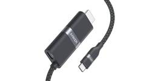
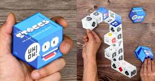
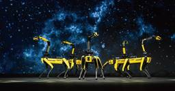
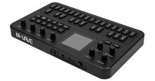

ギズモード・ジャパン
https://www.gizmodo.jp
日本最大のテクノロジー＆ガジェット専門メディア。YouTubeや記事を通じて、最新ガジェットの偏愛レビューから、AI／サイエンスの深掘りコンテンツまで幅広く発信しています。「みんなで探求する」を合言葉に、刺激的な未来の体験をシェアします。
フィード

買い替え不要。このケーブルで古いHDMIモニターもUSB-C充電対応になる
ギズモード・ジャパン
AnkerのUSB-C to HDMIケーブルを活用すれば、既存のHDMIモニターをUSB-C接続やPC充電対応へと手軽にアップグレード。ケーブル1本でスマートなデスク環境を実現します
11分前

3D感が斬新。平面で立体的に遊べるカードゲーム 1
1
ギズモード・ジャパン
トランプとUNOの要素を組み合わせた立体的なカードゲームSTACCSを紹介。平面ながら奥行きを感じさせるデザインと、戦略的なルールにハマりそう。
2時間前

ロボット犬はもう、データセンターの警備を始めている。1台2800万円でも「2年で投資回収できる」 3
ギズモード・ジャパン
AIデータセンターの警備で活躍するロボット犬の導入と経済合理性。1台2800万円でも2年で投資回収できる見込み。
3時間前

恐竜大国・福井で“世界最古の子育てタニシ”を発見
ギズモード・ジャパン
福井県勝山市の約1億2000万年前の地層から、世界最古となるタニシの子育ての証拠を発見。X線CTを用いた研究で判明した古代の繁殖方法と化石保存の謎を解説。
4時間前
自作アプリ、40分もあればできるって。“ガチ勢”に仕事で使えるアプリの作り方を聞いてみた
ギズモード・ジャパン
文系未経験でもAIを使って自作アプリが作れるのか？編集部・中橋に聞く、Claude Codeを活用した「バイブコーディング」の魅力。
5時間前
主役になるTHE NORTH FACEのサブバッグ。容量も確保できて手のひらサイズにたためる
ギズモード・ジャパン
旅行やハイキングのサブバッグに最適なノースフェイスのメイフライパック22をレビュー。手のひらサイズにたためる軽量性と22Lの大容量を両立し、街でも使いやすいデザインの魅力を紹介します。
5時間前

スポークがない車輪の自転車、実はアレを使ってるんです
ギズモード・ジャパン
スポークを全て取り払い、まるでフロントフォークの周りにタイヤが浮いているかのような自転車。いったいどういう仕組みになってるんでしょうか。
6時間前

ソファに沈みこみながら、リビングのスマートTVを操作したいって？
ギズモード・ジャパン
リビングのスマートTVやPCの操作を快適にするFramework Wireless Touchpad Keyboardは、ノートPC譲りの打鍵感とタッチパッドを搭載し、複数デバイスをスムーズに切り替え可能です。
9時間前

Claudeの悪用を見張る調査員、募集中。年収3,665万円から 1
ギズモード・ジャパン
AIによる兵器開発や脅威を防ぐClaudeのAnthropic社の求人「Technical CBRN-E Threat Investigator」の仕事内容を紹介します。
10時間前

Anthropicの人がClaudeと数学界のラスボス「リーマン予想」の証明を発見したらしい 9
ギズモード・ジャパン
Anthropic所属の数学者Levent Alpöge氏が自身のサイトにremark.pdfというファイルをアップしています。この文書には次のようなことが書かれています。リーマン予想は、数論を代表する古典的な問題です。ある大きさまでに素数…
14時間前


背中にディスプレイ！ 「Xiaomi 18 Pro Series」がセール価格で予約受付中
ギズモード・ジャパン
日本初上陸となる背面ディスプレイ搭載のシャオミ最新フラッグシップスマホ「Xiaomi 18 Pro Series」。
19時間前

1万円のシンセをAIで魔改造。電子楽器のファームウェア開放が始まった 149
ギズモード・ジャパン
中国のM-VAVEという楽器メーカーが販売している小型FMシンセ「FM-1」が、ちょっとした話題になっています。きっかけはユーザーによるカスタムファームウェアの開発です。この秋からソフトウェア改造が流行FM-1はアリエクなどを覗くと、だいた…
19時間前

クリエイターになるなら今しかない。AdobeとAIで「想像力を形にする」能力はみんなのものに
ギズモード・ジャパン
AdobeとAIを活用して想像力を具現化できる時代が到来。クリエイターを目指すなら今がベストタイミングかもしれません。
20時間前
お財布はいらない、ミャクミャクがいるから。スマートリングEveringに限定デザイン登場
ギズモード・ジャパン
限定ミャクミャクデザインのスマートリングEveringが登場。充電不要でVisaのタッチ決済やスマートロックの解除に対応し、財布を持たない完全手ぶらな日常を実現。
20時間前
あとどのくらい走れるか。スタミナがリアルタイムで見える、ランナーの武器「Suunto Run 2」
ギズモード・ジャパン
ランニングウォッチ「Suunto Run 2」の2カ月レビュー。視認性やバッテリーが向上し、新機能EnergySenseでスタミナの残量をリアルタイムで確認できることによるベネフィットとは。前作の「Suunto Run」にも触れつつレビューします。
21時間前